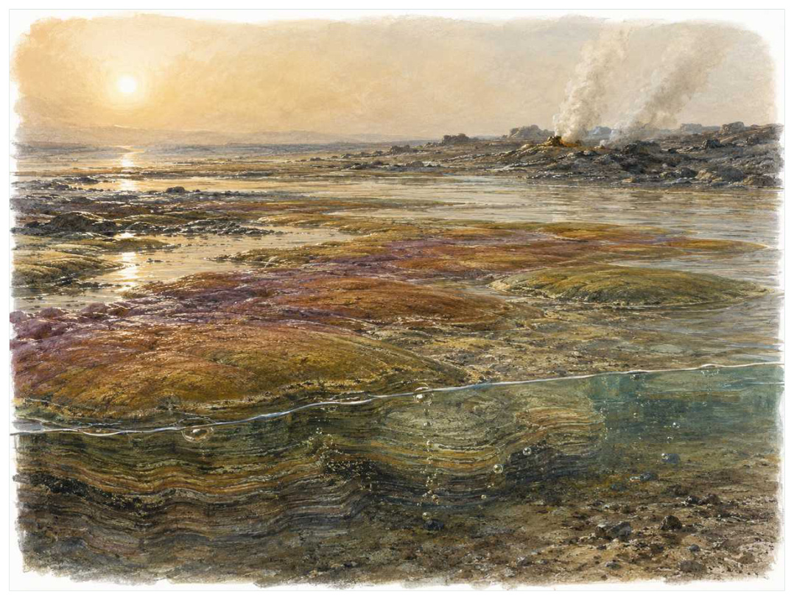
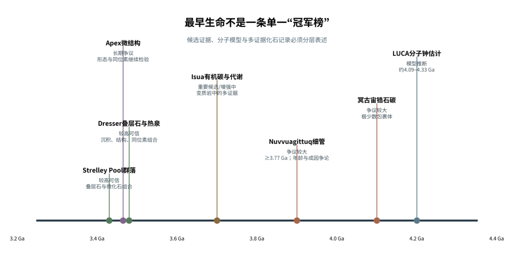

第01篇 · 最早的生命世界 · 第 2 章
微生物席：最早的生态系统工程师
本篇主题:最早的生命世界
从岩石中的微弱信号开始，理解微生物如何长期主宰地球。

本章科学复原配图 （用于呈现结构与生态关系, 不替代化石照片、测量数据与系统发育证据。）
约35亿至25亿年前对应的世界与现代地图和气候都不同。理解它不能从一只明星物种开始，而应从整个系统的限制开始。早期生命不是孤立细胞在海里漂浮，而常常形成附着在沉积物表面的多层群落。不同深度接收的光、氧和化学物质不同，光合者、发酵者、硫循环者与产甲烷者因此排列成微小却复杂的生态剖面。微生物席既制造有机物，也黏结颗粒、改变水体化学并促使矿物沉淀。
进入这个时代
生态系统的真实声音不是巨兽咆哮，而是持续的摄食、分解、搬运和繁殖。每一具尸体、每一层落叶和每一次沉积扰动都会重新分配资源。浅海潮坪上看似只有一层暗绿或紫褐色薄膜。把尺度缩小，表层细胞利用光，下面的群体消耗泄漏的有机物，更深处则在无氧条件下进行硫酸盐还原、发酵和产甲烷。昼夜变化会让氧化还原边界上下移动。
在“微生物席：最早的生态系统工程师”所覆盖的时间里，不能把地理与气候当作固定背景。海陆位置、海平面、河流或植被结构会改变资源可达性，同一性状在不同地区可能得到完全相反的选择结果。
以微生物席：最早的生态系统工程师为例，物种数量并不等于生态功能。一个群落即使仍有许多物种，只要初级生产、授粉、礁体建造或大型植食等关键功能消失，食物网也会表现为深度崩溃。反过来，少数机会型物种高丰度并不代表系统已经恢复。在本章中，这一约束具体落在“初级生产者向下输送有机物”这条关系上。
再从约35亿至25亿年前的时间尺度看，旧结构被重新利用是宏演化的常见路径。自然选择无法从零绘图，只能修改已有骨骼、膜、基因调控和生活史。后来承担新功能的结构，往往最初因完全不同的局部收益而扩散。 它与“群落分层”共同决定了后续变化可以沿哪些路径发生。

图 2-1 最早生命证据并非同等可靠，应按年代与证据类型分层。
生态系统如何运转
把“初级生产者向下输送有机物”放进食物网，可以看到它不是孤立行为。它会影响种群密度、栖息地使用和尸体进入分解链的速度，并把后果传给并未直接参与互动的物种。
围绕“初级生产者向下输送有机物”，还要考虑空间异质性。一项在浅海、河谷或林冠有效的策略，移到深水、干旱内陆或开阔地便可能失去优势。因此同一支系常出现区域性扩张，而不是全球同步取代。 对微生物席：最早的生态系统工程师而言，这一后果还会与“厌氧分解者把大分子拆解为可再利用的小分子”相互放大或抵消。
理解“厌氧分解者把大分子拆解为可再利用的小分子”需要区分个体事件与长期压力。偶然一次捕食只改变个体命运，持续数千代的稳定关系才可能推动牙齿、外壳、感觉器官或生活史发生方向性变化。
围绕“厌氧分解者把大分子拆解为可再利用的小分子”，这一机制也会留下间接证据：咬痕、修复伤、足迹密度、粪化石、牙齿磨损和群落年龄结构分别记录不同环节。只有多种证据方向一致，行为解释才应上调可信度。 对微生物席：最早的生态系统工程师而言，这一后果还会与“群落分泌的胞外聚合物捕获沉积颗粒并形成层状结构”相互放大或抵消。
“群落分泌的胞外聚合物捕获沉积颗粒并形成层状结构”还会改变可利用空间。一个支系若能进入新的水深、植被高度或沉积层，竞争会暂时减弱；随后追随者、捕食者和寄生者又会把新空间变成新的互动网络。
围绕“群落分泌的胞外聚合物捕获沉积颗粒并形成层状结构”，从演化树看，相似关系可能在远亲中反复出现。功能相近不必意味着近缘，而同一祖先结构也可能被后代改作完全不同的用途；生态解释必须与系统发育互相校验。 对微生物席：最早的生态系统工程师而言，这一后果还会与“初级生产者向下输送有机物”相互放大或抵消。
关键演化创新
在“微生物席：最早的生态系统工程师”中，围绕“群落分层”，讨论“群落分层”时，最重要的问题是它解除哪一道限制。只要原有身体在运动、摄食、呼吸或繁殖上受约束，能够稍微缓解约束的变异就可能积累，最终产生看似跃迁的结果。 它首先需要在约35亿至25亿年前的生态条件下产生可测量收益。
就“群落分层”而言，化石能较可靠地记录硬组织形态，却很少直接保留基因调控与短时行为。因此结构出现通常可信，最初用途和选择路径则应按证据标为主流解释或合理推测。 本章把它与“生物膜与胞外聚合物”并列，是为了显示复杂性状往往依赖多部分协同。
在“微生物席：最早的生态系统工程师”中，围绕“生物膜与胞外聚合物”，从共同选择角度看，“生物膜与胞外聚合物”可能先服务旧功能，后来才参与今天最熟悉的用途。把最终功能倒推成起源原因，会把演化误写成有目的的工程。 它首先需要在约35亿至25亿年前的生态条件下产生可测量收益。
就“生物膜与胞外聚合物”而言，其宏观影响往往滞后于结构起源。一个创新可以先在小型、稀少支系中存在数百万年，直到环境变化或竞争者灭绝后才迅速扩张；“出现”和“成为主导”是两个不同事件。 本章把它与“元素循环耦合”并列，是为了显示复杂性状往往依赖多部分协同。
在“微生物席：最早的生态系统工程师”中，围绕“元素循环耦合”，讨论“元素循环耦合”时，最重要的问题是它解除哪一道限制。只要原有身体在运动、摄食、呼吸或繁殖上受约束，能够稍微缓解约束的变异就可能积累，最终产生看似跃迁的结果。 它首先需要在约35亿至25亿年前的生态条件下产生可测量收益。
就“元素循环耦合”而言，这也提醒我们不要寻找单一关键基因。复杂性状由多个组织和调控网络协调，改变任何一环都可能产生不同结果，演化路径因此呈树状而非直线。 本章把它与“群落分层”并列，是为了显示复杂性状往往依赖多部分协同。
生命群像：把物种放回生态网络
蓝细菌类群（Cyanobacteria）
蓝细菌类群（Cyanobacteria）存在于至少太古宙晚期至今。现有材料显示其大小约单细胞或丝状微米级，生态位置接近光照水域中的初级生产者。能够进行氧合光合作用，是后续氧化世界的关键来源让它成为理解本章主题的合适案例，但不意味着同一类群所有成员都采用相同策略。
对蓝细菌类群而言，相似环境可能让远亲出现相近轮廓，但内部结构会保留祖先限制。比较它与现代类比时，应只借用可检验的功能，不把现代动物的行为、社会制度或代谢水平整套复制到古生物身上。 这使“能够进行氧合光合作用，是后续氧化世界的关键来源”不能脱离其光照水域中的初级生产者角色来理解。
现有认识建立在早期化石很难精确归入现代类群，出现时间仍以多类证据综合判断之上。古生物学的可信度不是来自一件戏剧化标本，而是来自多件标本、多个地点和不同方法得到相容结果。新发现若改变比例或分类，并非此前研究毫无价值，而是证据边界被重新画清。
由蓝细菌类群这个案例看，从生态尺度看，它与本章其他成员共同维持一张网络。任何“最强”排名都会遗漏资源供应、幼体死亡、疾病和气候脉冲；真正决定长期成功的是种群能否在波动中不断完成繁殖。 它在至少太古宙晚期至今留下的记录，因此同时是第2章所讨论的形态史和生态史的一部分。
产甲烷古菌（methanogenic Archaea）
在早期地球至今，产甲烷古菌（methanogenic Archaea）以约微米级的身体参与食物网。它不是孤立的“明星生物”，而是无氧沉积物和孔隙水中的终端分解者；以氢和二氧化碳等底物产生甲烷，可能影响早期温室效应决定它能利用哪些资源，也决定必须承担哪些成本。
对产甲烷古菌而言，它既可能是捕食者、植食者或工程者，也同时是其他生物的猎物、竞争者和分解资源。一次取食只是一瞬，长期生态影响来自成千上万个体反复搬运营养、改变植被或扰动沉积物。体型越大，这种工程效应通常越明显，但恢复速度也常越慢。 这使“以氢和二氧化碳等底物产生甲烷，可能影响早期温室效应”不能脱离其无氧沉积物和孔隙水中的终端分解者角色来理解。
支持该解释的材料包括分子钟和同位素约束存在范围，不能给出单一精确起源日期。若不同证据出现冲突，应优先报告范围而不是强行给出单值。例如体长会随参照类群变化，运动能力会随软组织假设变化，系统位置也会随新增性状重新计算。
由产甲烷古菌这个案例看，它也展示专门化的双面性：结构在稳定环境中提高效率，却可能在气候、食物或竞争格局突变时限制转向。灭绝不是对设计的道德评分，而是性状、地理范围和偶然事件相遇后的历史结果。它在早期地球至今留下的记录，因此同时是第2章所讨论的形态史和生态史的一部分。
硫酸盐还原菌（sulfate-reducing bacteria）
认识硫酸盐还原菌（sulfate-reducing bacteria）要先放弃静态骨架印象。它生活在太古宙至今，约微米级，日常任务是作为无氧层中利用硫酸盐分解有机物维持能量与繁殖。产生硫化物并影响金属矿物沉淀只是这一整套生活史中最容易化石化的部分。
对硫酸盐还原菌而言，成年体型往往主导复原，但幼体可能使用完全不同的食物和栖息地。若成长阶段跨越多个生态位，种群就同时依赖多套环境；其中任一环节中断都可能导致长期衰退。化石骨床的年龄结构因此比单具最大标本更能说明生态。这使“产生硫化物并影响金属矿物沉淀”不能脱离其无氧层中利用硫酸盐分解有机物角色来理解。
我们之所以能够作出上述判断，主要因为古代海洋硫酸盐浓度低，代谢强度和空间分布随时代变化。单一结构通常有多种功能解释，所以还要查看磨损、病理、肌肉附着、沉积环境和近缘比较。计算模型能排除不可能姿势，却不能自动恢复没有保存的软组织。
由硫酸盐还原菌这个案例看，面对仍有争议的细节，负责任的复原不是停止讲述，而是标注证据等级。形态、年代和亲缘可较确定，具体姿势、叫声、求偶和群猎则按材料降级；新标本会在这些边界内继续改写认识。 它在太古宙至今留下的记录，因此同时是第2章所讨论的形态史和生态史的一部分。
紫硫细菌（purple sulfur bacteria）
紫硫细菌（purple sulfur bacteria）生活在古老光合支系的现代代表，已知体型约为微米级。它在群落中的角色可概括为有光但缺氧、富硫化物的水层。最值得观察的结构是进行不产氧光合作用，说明光合作用并非天然等于释放氧气。这些结构不是为了后来时代而准备，而是在当时直接影响摄食、运动、防御或繁殖。
对紫硫细菌而言，这种生活方式还会反向塑造环境。摄食改变植物或猎物结构，足迹和掘穴改变沉积，尸体和排泄物把营养集中到局部。生态位不是它进入的固定房间，而是它与其他生物共同建造并持续修改的关系网络。 这使“进行不产氧光合作用，说明光合作用并非天然等于释放氧气”不能脱离其有光但缺氧、富硫化物的水层角色来理解。
其复原依赖现代生态可帮助理解早期机制，但古代具体支系未必与现生类群相同。年代和保存形态通常属于较强证据，体重、速度、颜色和社会行为则需要额外假设。书中把这些层次拆开，是为了让读者知道哪些可视为事实，哪些仍应等待更多材料。
由紫硫细菌这个案例看，它不是祖先链条上必须跨过的一格。演化树中同时存在许多近缘支系，只有少数留下后代；旁支化石同样关键，因为它们显示某组性状出现的顺序和可行范围。 它在古老光合支系的现代代表留下的记录，因此同时是第2章所讨论的形态史和生态史的一部分。
巴哈马现代叠层石群落（Bahamas stromatolite communities）
在这一章的生命群像里，巴哈马现代叠层石群落（Bahamas stromatolite communities）不能只当作图鉴名称。它出现于现代类比，体型大约厘米至米级，主要生活方式是高盐或受强扰动浅水区；展示微生物、沉积物流和放牧压力如何共同控制叠层生长则说明身体怎样围绕这一生活方式进行组合。
对巴哈马现代叠层石群落而言，相似环境可能让远亲出现相近轮廓，但内部结构会保留祖先限制。比较它与现代类比时，应只借用可检验的功能，不把现代动物的行为、社会制度或代谢水平整套复制到古生物身上。 这使“展示微生物、沉积物流和放牧压力如何共同控制叠层生长”不能脱离其高盐或受强扰动浅水区角色来理解。
科学家并未直接看见它生活，依据是现代海洋已有动物放牧者和氧化环境，与太古宙条件并不完全相同。现代类比可以帮助提出可检验模型，却不能取代化石；越具体的短时行为，越需要痕迹、内容物或重复病理等直接线索。
由巴哈马现代叠层石群落这个案例看，这个案例还提醒我们，亲缘和生态角色是两件事。近亲可以因资源分化而外形迥异，远亲也能因相似压力而趋同。把它放在演化树和食物网两个坐标中，才不会误写成线性进步。 它在现代类比留下的记录，因此同时是第2章所讨论的形态史和生态史的一部分。
因果链：环境、生态与性状
从时间顺序看，“群落分层”的最早记录不等于它立即改写生态系统。结构可能先以小幅变异出现在稀少支系中，经历很长的试验期，直到“初级生产者向下输送有机物”所代表的资源条件或竞争格局改变，才出现可见的辐射。反过来，一个支系在化石记录中突然繁盛，也不证明关键结构刚刚产生；保存窗口打开、地理扩散或生态位释放都能造成类似图景。因此讨论约35亿至25亿年前的创新时，本章把“首次出现”“功能完善”“多样化”和“成为生态主导”分成四个问题，避免用一个日期替代整段历史。
在约35亿至25亿年前，身体不是若干部件的简单相加。“群落分层”只有与“元素循环耦合”在供能、控制和发育上兼容，才可能稳定遗传；局部性能提高若超过呼吸、循环或支撑能力，整体反而失效。硫酸盐还原菌的产生硫化物并影响金属矿物沉淀因此应放进完整身体比例中解释，而不是把某一器官单独夸大。生物力学模型可以估算受力和运动范围，组织学能限制生长速度，近缘比较能提示同源关系；三者相互校验，才有可能从静态化石走向一个能够活着完成日常活动的动物或植物。
种群层面的成功还要考虑波动，而不仅是平均状态。在资源丰富年份，“生物膜与胞外聚合物”带来的高性能可能迅速增加个体数；在低谷年份，维持该结构的成本又会放大死亡。若产甲烷古菌拥有较广食谱或可迁移，便可能跨过低谷；若其以氢和二氧化碳等底物产生甲烷，可能影响早期温室效应高度依赖单一环境，恢复就更困难。化石群落中的丰度峰值、体型变化和地理收缩能为这种“繁荣—压力—恢复”循环提供线索，但必须与采样偏差区分。对约35亿至25亿年前的任何稳态描述，都只是长期波动中被岩层保存的一小段。
本章的因果链最终落在繁殖上。“厌氧分解者把大分子拆解为可再利用的小分子”改变个体获得资源和避开风险的方式，“群落分层”改变身体能做什么，但只有这些差异持续影响配子、胚胎、幼体和成体留下后代的概率，演化频率才会跨世代变化。蓝细菌类群和产甲烷古菌的化石常让人关注尺寸或武器，然而巢、蛋、芽孢、孢粉、幼体壳和成长线往往更接近选择真正发生的位置。理解微生物席：最早的生态系统工程师，因此要把最壮观的成年结构重新接回完整生活史。
把“群落分层”拆成成本与收益，可以避免把演化创新写成无条件升级。它可能扩大摄食、运动或繁殖的边界，却要付出组织材料、发育协调和日常维持的代价；“生物膜与胞外聚合物”又会改变这笔账在不同生命阶段的分配。对蓝细菌类群而言，能够进行氧合光合作用，是后续氧化世界的关键来源在成年阶段或许十分醒目，但种群能否延续仍取决于幼体是否能找到食物、是否有安全的生长场所以及环境波动后是否保留繁殖者。化石往往偏爱成年硬组织，因此书写约35亿至25亿年前时必须主动补上这些不易保存却决定长期命运的环节。
时代横截面：个体、种群与证据
证据强度也应逐句区分。叠层石层理和微生物诱导沉积构造若直接记录形态或行为痕迹，可把某些可能性排除；硫同位素记录硫循环若来自模型或现代类比，则通常提供范围而非唯一答案。对硫酸盐还原菌的产生硫化物并影响金属矿物沉淀，我们也许能高可信地描述结构，却只能以主流解释讨论功能，以合理推测讨论日常行为。把层级写出来不会削弱故事，反而让读者知道未来新发现最可能改动哪一部分。
把结构看作模块，可以解释为什么过渡类型常显得“新旧并存”。蓝细菌类群的能够进行氧合光合作用，是后续氧化世界的关键来源可能已经接近后来状态，而呼吸、繁殖或运动的其他部分仍保留祖征；产甲烷古菌可能采用另一种组合达到相似功能。演化不要求所有部件同步改变，只要求每个阶段的完整个体能够生活和繁殖。正因如此，真实谱系会产生旁支、回退和多次独立试验，而不是教科书式直梯。
再把硫酸盐还原菌加入横截面，群落关系会从两者比较变成网络。它作为无氧层中利用硫酸盐分解有机物，通过产生硫化物并影响金属矿物沉淀连接资源与其他消费者；其数量变化可能同时影响蓝细菌类群和产甲烷古菌，甚至改变分解链和营养循环。这样的间接效应很少能由一具骨架直接证明，却可以从物种共现、丰度、痕迹化石和环境指标中受到约束。微生物席：最早的生态系统工程师的生态复原因此需要群落数据，而不只是著名标本的精细解剖。
地理同样会拆散看似整齐的时代标签。约35亿至25亿年前并不是全球同时拥有同一种气候与群落：海盆深浅、纬度、山脉、河流和大陆隔离会让蓝细菌类群、产甲烷古菌与硫酸盐还原菌的分布错开。一个支系可能在某地区衰退、在另一地区成为避难所；后来扩散又会造成化石记录中的“重新出现”。因此本章的代表物种用于说明机制，而不意味着它们都在同一地点同一时刻相遇。
“谁取代了谁”常把复杂过程压成单线叙事。在微生物席：最早的生态系统工程师中，即使产甲烷古菌在某层位后减少、硫酸盐还原菌随后增加，也可能是二者分别响应气候或栖息地，而不是直接竞争导致淘汰。需要检查时间误差、地理重叠和资源相似度；只有三者都支持，替代关系才更可信。更多时候，生态系统通过功能重新组合过渡，旧支系与新支系会长期并存。
科学家为什么这样判断
“叠层石层理和微生物诱导沉积构造”提供的是一类约束而非完整录像。它可能精确记录某一瞬间，却未必代表全年或整个物种；也可能反映长期平均，却无法指出单次行为。把不同时间尺度的证据组合，才能重建生态过程。
“硫同位素记录硫循环”还需要与年代学绑定。只有事件先后关系可靠，才能讨论因果；若环境变化和生物响应的误差范围大量重叠，就应表述为相关或可能机制，而不是宣布已经证明。
“实验和现代盐湖类比揭示席内部的日变化”最有价值的地方，是它能排除某些流行复原。关节不允许的姿势、承重无法支持的速度、与沉积环境冲突的生活方式，都可以被证据淘汰；剩余模型仍可能不止一个。
在“微生物席：最早的生态系统工程师”这一问题上，把上述方法合在一起，研究者才能从残缺材料走向受约束的复原。任何一条证据都可能受到成岩、污染、样本量或现代类比的限制；结论越具体，越需要多条独立证据指向同一方向，并与约35亿至25亿年前的地层背景相容。
过去的图景与今天的证据
叠层石是一类构造，不等于某个固定物种，也不必全部由蓝细菌造成。某些层状岩石可能有强烈的物理沉积成分；反过来，没有宏观叠层形态也不意味着微生物席不存在。
围绕“微生物席：最早的生态系统工程师”，需要特别警惕新闻标题把“可能”“支持”改写成“已经证明”。古生物学很少能直接观察行为，越接近颜色、叫声、群居和捕猎策略，越应说明样本数量与替代解释。
对约35亿至25亿年前的材料而言，争议持续还因为不同问题需要不同尺度。个体生物力学、种群生态和全球气候模型无法互相替代；一个模型能解释骨骼受力，不等于已经解释整个支系为何扩张或灭绝。
跨尺度观察
微生物底盘：宏体生态依赖微生物完成分解、固氮和碳硫循环。即使章节聚焦巨型动物，尸体最终仍由微生物和小型分解者处理；大灭绝后的恢复也往往先表现为生产和分解网络重建，而非大型动物立即回归。在“微生物席：最早的生态系统工程师”中，这一尺度具体连接了“初级生产者向下输送有机物”与“群落分层”，因而不能只从单个成年标本判断。
尺度错觉：百万年足以让微小遗传差异累积成巨大的身体变化，数万年的快速事件又可在地质记录中近似一条细线。把深时间压缩会制造“突然出现”的错觉，因此正文同时报告持续时间和证据分辨率。 在“微生物席：最早的生态系统工程师”中，这一尺度具体连接了“厌氧分解者把大分子拆解为可再利用的小分子”与“生物膜与胞外聚合物”，因而不能只从单个成年标本判断。
能量账本：任何大型身体、快速运动或高代谢都必须由初级生产支撑。食物从生产者进入消费者时会损失大量能量，因此顶级捕食者种群必然远少于猎物。环境变化若先削弱生产端，高营养级通常最早出现繁殖失败；这比单次搏斗更能决定支系命运。在“微生物席：最早的生态系统工程师”中，这一尺度具体连接了“群落分泌的胞外聚合物捕获沉积颗粒并形成层状结构”与“元素循环耦合”，因而不能只从单个成年标本判断。
通向下一个时代
从本章走向下一阶段时，需要保留的不是一串物种名，而是一个因果链：环境改变可用能量与栖息地，生态关系筛选性状，性状又反过来改造环境。随着代谢类型增加，早期海洋成为化学反应网络。下一章将看到，微生物之间的竞争与合作怎样建立全球碳、硫、氮和甲烷循环。
本章精选来源
- [R2] Knoll, A. H. Life on a Young Planet: The First Three Billion Years of Evolution on Earth. Princeton University Press, 2003.
- [R4] Djokic, T. et al. Earliest signs of life on land preserved in ca. 3.5 Ga hot spring deposits. Nature Communications 8, 15263 (2017).
- [R5] Dodd, M. S. et al. Evidence for early life in Earth’s oldest hydrothermal vent precipitates. Nature 543, 60-64 (2017).
- [R6] Nutman, A. P. et al. Rapid emergence of life shown by discovery of 3,700-million-year-old microbial structures. Nature 537, 535-538 (2016).
- [R7] Garcia, A. K., Cavanaugh, C. M. & Kacar, B. The curious consistency of carbon biosignatures over billions of years of Earth-life coevolution. ISME Journal 15, 2183-2194 (2021).